Learning Objectives
After completing this lesson, you'll be able to:
- Add a Generic writer to a workspace.
- Set the initial format of a Generic writer.
- Create a Choice parameter that prompts for a writer format.
- Use a Choice parameter for the Generic writer output format.
- Use a feature type fanout on fme_feature_type to return features to their original layer.
- Use a .zip extension to create zipped output datasets.
In this lesson, you will:
- Optional: Watch a demonstration video (it repeats what we cover in live training).
- Scroll down to read the activity instructions below and, if it has an exercise, follow the steps in your lab.
- Complete the exercise by following the steps.
- Complete the quiz at the end of this lesson.
- Click 'Next' to mark the lesson complete.
Resources
- Community Map File Geodatabase
- If your computer has FMEData, the file path is C:\FMEData\Data\CommunityMapping\CommunityMap.gdb
- Complete workspace
- C:\FMEData\Workspaces\AdvancedReadingAndWriting\let-the-user-choose-the-output-format-complete.fmw
Exercise

Sven is regularly asked to convert the community map into whatever format a colleague needs. He wants to hand that job back to them: one workspace that reads the community map, lets whoever runs it pick the output format, and returns the result as a single zipped folder.
In this exercise, you will:
- Configure a Generic writer whose output format is chosen at run time.
- Create a Choice user parameter that restricts the format list to a chosen few.
- Fan out on fme_feature_type so features return to their original tables.
1) Create the Workspace and Add the Reader
This workspace is built from scratch rather than opened from a starting file. Reading the geodatabase as a single merged feature type keeps the canvas compact, and it lets whoever runs the workspace choose which tables to read.
- Start FME Workbench 2026.2 or later with an empty canvas.
- Select Build > Readers > Add Reader and configure the following parameters:
- Reader Format: Esri Geodatabase (OpenFile Geodb)
- Reader Dataset: the Community Map File Geodatabase download, or C:\FMEData\Data\CommunityMapping\CommunityMap.gdb
- Workflow Options: Single Merged Feature Type
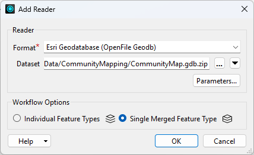
2) Add the Generic Writer
The Generic writer does not commit to a format when you add it. You still give it a starting format so the writer has something to work with, and the end user replaces that choice at runtime.
- Select Build > Writers > Add Writer and configure the following parameters:
- Writer Format: Generic (Any Format)
- Writer Dataset: C:\FMEData\Output\Training
- Parameters > Output Format: Esri Shapefile
- Feature Type Definition: Automatic
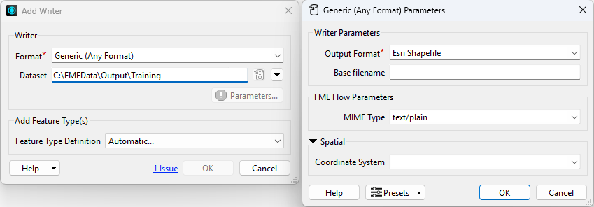
- Click OK.
- The Feature Type Properties dialog opens on its own.
- Click OK to accept the new feature type.
- Connect the writer feature type to the source feature type.
- The attribute schema updates to match the reader feature type as soon as you make the connection.
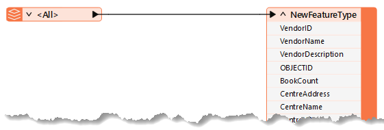
3) Review the User Parameters
Adding the reader and the writer created several user parameters automatically. Two are worth keeping, one is unnecessary, and one offers the end user far more choice than they need.
- In the Navigator, expand User Parameters.
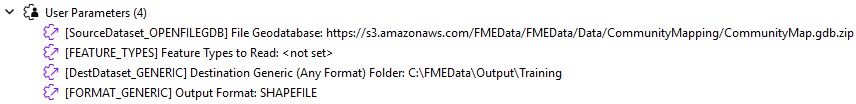
- Delete the SourceDataset_OPENFILEGDB parameter.
- This translation always reads the same dataset, so nothing needs to change it at run time.
- Keep the Feature Types to Read parameter and the Destination Dataset parameter.
- Feature Types to Read is what prompts the user to pick which tables to read from the source geodatabase.
- Double-click the Output Format parameter as though you were setting a value.
- The More Formats... option opens the complete FME format list. That is more choice than the end user needs, so you will replace this parameter with a restricted one.
- Click Cancel.
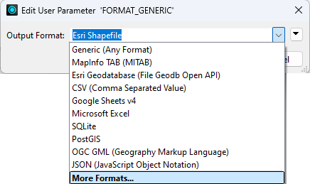
- Delete the Output Format parameter.
4) Add a Choice User Parameter
A Choice parameter offers a short list of formats instead of the full catalogue. The value FME stores is the format shortname the Generic writer needs, while the display text is what the end user reads.
- In the Navigator, right-click User Parameters and select Manage User Parameters.
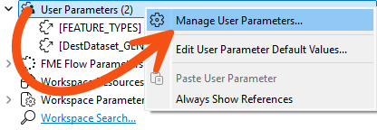
- Click the Plus button and add a Choice parameter.
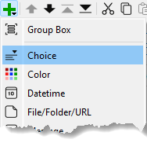
- Configure the following parameters:
- Parameter Identifier:
OutputFormat
- Label:
Select Output Format:
- Required: Checked
- Show Label: Checked
- Visibility: Always Show
- In the Choice Configuration group, click Import and select Writer Formats.
- You may have to scroll down to see the Import button.
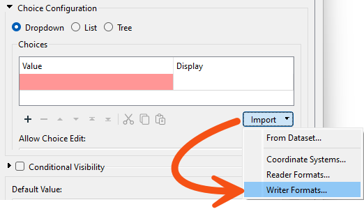
- Select a handful of common spatial formats, such as Esri Shapefile, AutoCAD DWG, OGC GML and MapInfo TAB, then click OK.
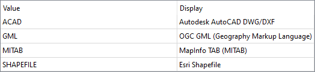
- Set Default Value to Esri Shapefile.
- It's at the bottom of the dialog.
- Click OK until every dialog is closed.
- The Value column holds the FME format shortname, which is what the Generic writer needs in order to run. The Display column is the human-readable name the end user picks from. Importing the formats saves looking each shortname up by hand.
5) Link the Parameter to the Writer
The new parameter exists, but nothing uses it yet. Linking it to the writer's own Output Format parameter is what actually puts the end user in control of the format.
- In the Navigator, expand the parameters for the Generic writer.
- Right-click the Output Format parameter and select Link to User Parameter.
- Select OutputFormat and click OK.
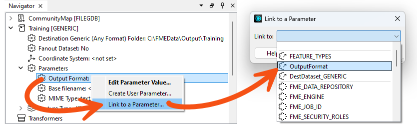
- Confirm the Output Format prompt now offers only the formats you chose.
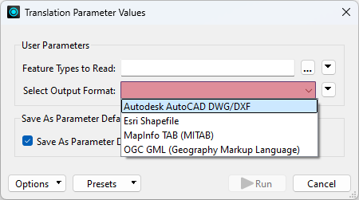
6) Set a Fanout on fme_feature_type
Everything currently writes to a single output feature type. Fanning out on fme_feature_type sends each feature back to a table named after the one it came from, which is what makes the output look like the source.
- Open the properties for the writer feature type.
- Click the drop-down arrow to the right of the Feature Type Name parameter, click Attributes, and select fme_feature_type.
- The writer now creates one output feature type for each unique value of fme_feature_type.
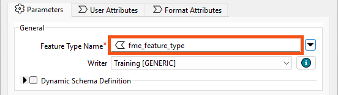
- Click the User Attributes tab.
- Change Attribute Definition from Automatic to Manual.
- Set Spatial Definition > Geometry Type to fme_any.
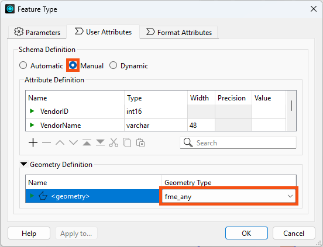
7) Save and Run the Workspace
Running with prompting turned on is what exercises everything you just built: the table picker, the restricted format list and the fanout.
- Save the workspace.
- Click Run > Rerun Entire Workspace with Prompt for Parameters enabled.
- It's a good idea to rerun the entire workspace when you have user parameters impacting readers to ensure you are prompted for their values.
- Select some source tables to read, including GarbageSchedule and at least one other.
- For Destination Generic (Any Format) Folder, set an output folder such as C:\FMEData\Output\Training and add
\CommunityMapping.zip to the end of it.
- Ending the path with a .zip name makes FME create a zipped file rather than a loose folder.
- Set Esri Shapefile as the format to write.
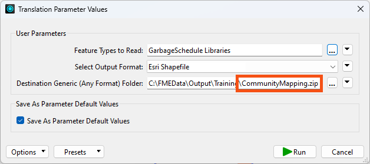
- Click Run.
- Examine the output folder.
- FME created a zipped folder holding each selected table in Shapefile format. You can open the ZIP file directly or extract it.
- Selecting View Written Data opens the Select Dataset to View dialog. Specify the format and dataset to see the data. The Tips at the end of this exercise explain why FME asks.
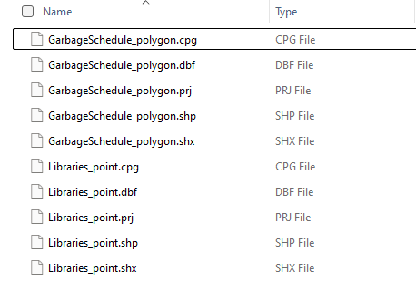
You have built a workspace that reads a geodatabase, lets whoever runs it choose from a short list of output formats, returns each table to its own layer, and delivers the result as a single zipped file. Publishing it to FME Flow would give users those same choices through a browser.
Tips
- Notice that FME put the geometry type into the output file names. Shapefile cannot hold more than one geometry type in a single .shp file, so FME separates them, sending linear features to a file ending in _line and points to one ending in _point.
- Every Shapefile in the output carries all of the source tables' attributes, because the single merged feature type gives every feature the same schema. Avoiding that requires a dynamic translation.
- If you are not yet comfortable with user parameters, Create Flexible Workspaces with Parameters covers them from the beginning.
- Selecting View Written Data on a dynamic or generic writer feature type usually opens the Select Dataset to View dialog, because FME does not know the format or path in advance. Specify the format and dataset to view the data. The same happens with a writer feature type fanout, where the output path depends on an attribute value FME only reads at run time.
Additional Resources